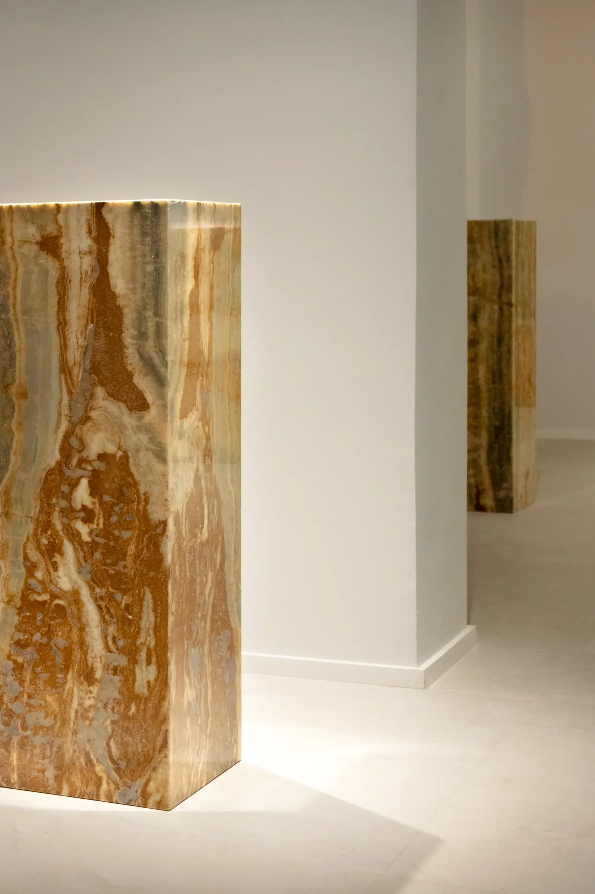
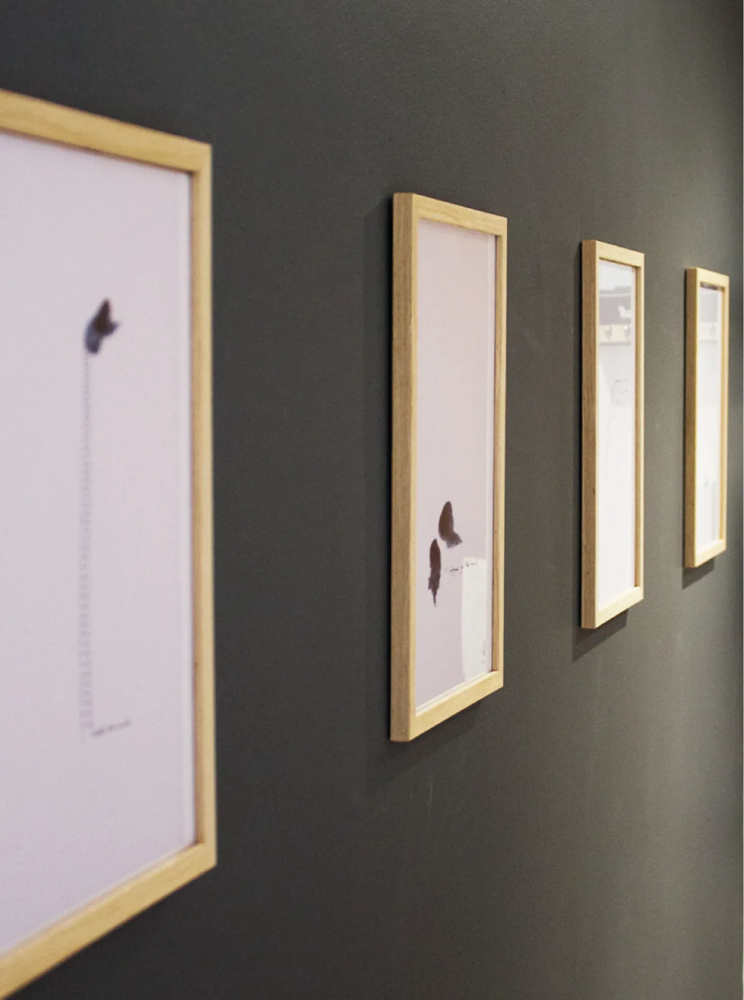
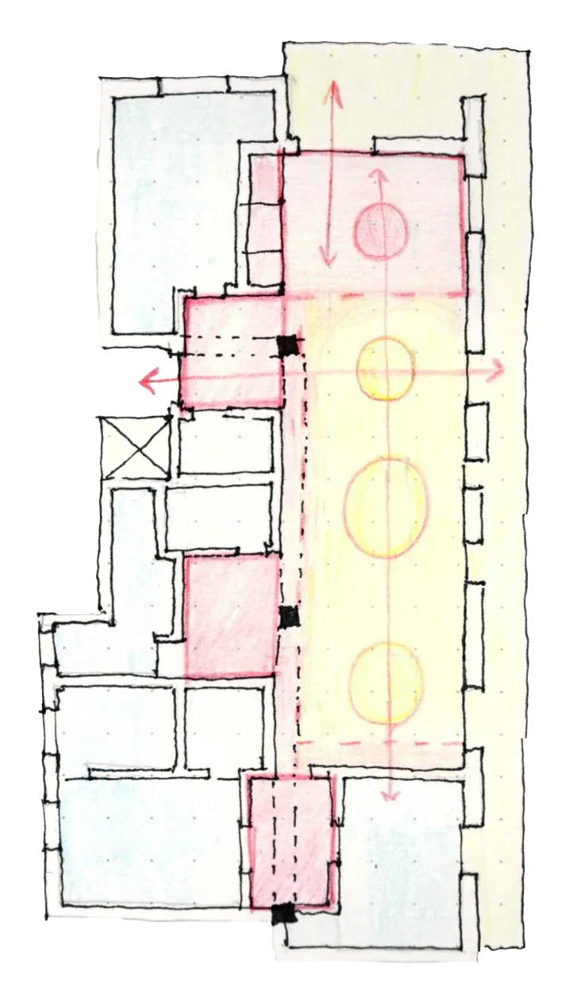

Bar e ristorante
Corso Canalgrande, Modena, Italia
2025
Ricerca e progettazione architettonica, dal dettaglio costruttivo alla scala urbana. Disegno, realtà virtuale, co-progettazione e ricerca compositiva guidano un metodo fondato su ascolto e chiarezza progettuale.
Ogni progetto nasce per rispondere con efficacia e innovazione alle sfide dello spazio contemporaneo. Dopo esperienze professionali a Mantova, Berlino e Roma, lo studio opera oggi a Modena, occupandosi di progettazione e ristrutturazione di appartamenti e spazi commerciali.
L'attività di architetto a Modena si fonda su un approccio attento al contesto, alla qualità dello spazio e alle esigenze del cliente. La specializzazione in progettazione in siti storici e contesti UNESCO consente di affrontare ogni intervento con sensibilità e profondo rispetto per l'esistente.
Samuele SilvestriArchitetto
Via Asiago 58, 41125 Modena
info@samuelesilvestriarchitetto.com
+39 366 493 8286
Instagram Iscr. Ordine degli Architetti di Modena n°1437 – sez. A
P.IVA 04180440366







